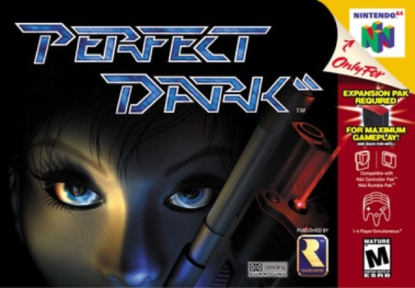

Shooter · 2000
Perfect Dark
GoldenEye's successor, with bots, gadgets and sci-fi swagger.

Cover: Wikipedia: Perfect Dark
Facts
- Released
- 2000-05-22
- Genre
- FPS
- Category
- Shooter
- Platforms
- Nintendo, Xbox
- Developers
- Rare Ltd.
- Publishers
- Rare Ltd.